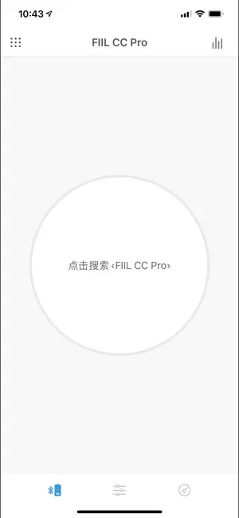
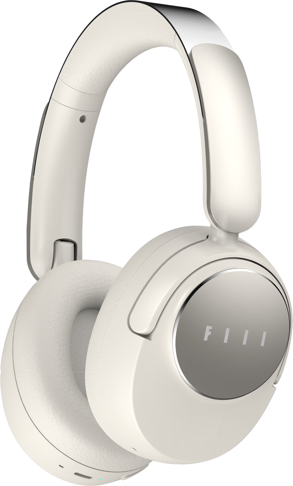

FIIL 耳机全系深度盘点：调音、降噪、产品矩阵一次看透
FIIL 近年在 TWS 和头戴市场动作频繁，从 EQ 调音体系到自适应降噪，再到四款形态各异的主力产品——这篇长文把它的能力面完整铺开，帮你判断哪款适合自己。
FIIL 是这些年在无线耳机领域存在感越来越强的一个品牌——从它的官网上能看到完整的产品序列和技术说明。从早期主打半入耳经典款，到现在覆盖头戴、入耳、半入耳、耳夹式四种形态，它的产品线已经相当完整。但很多人对 FIIL 的认知还停留在"性价比还行"这个模糊印象上，对它的核心能力——尤其是 EQ 调音体系和降噪技术到底做到了什么程度，了解得并不清楚。
这篇文章不做选购指南那种"直接告诉你买哪款"的事，而是把 FIIL 当前整个耳机系列的能力面系统性地铺开。读完你会知道它在哪些维度上做得真有东西、哪些地方还有明显短板，最后也能根据自己的使用场景对上号。
调音体系：三层 EQ，从一键到全自定义
调音是 FIIL 这两年下功夫最深的一块。很多品牌把 EQ 做成一个附带功能——要么给几个预设拉倒，要么开放自定义但界面简陋得像工程测试工具。FIIL 不一样，它在 fiil+ App 里做了一个三层 EQ 系统——下载安装后连上耳机就能用，把调音这件事分成了三个独立层级，每个层级对应不同的用户需求。
最底层是官方 EQ，只有三种：标准、低音增强、人声增强。这三种不是 App 随便给的预设——它们是 FIIL 声学实验室针对每款耳机的单元特性做的完整频响曲线校准。简单说，就是同一个"标准 EQ"，在 Key Max 头戴和 CC3 半入耳上跑出来的实际效果是不一样的，因为底层参数是各自匹配过的。如果你拿到耳机觉得"默认调音就很好听"，那大概率就是这个官方 EQ 在起作用。这一层的意义是：不想折腾的用户直接用就行，拿到的是这个耳机能出的最好听的默认声音。
中间层是场景预设 EQ，数量在 12 种左右，常见的有流行、摇滚、爵士、古典、电子、说唱、人声、电影、游戏、播客、有声书这些。这一层做的事情很直接：针对某一类内容，把该类最看重的频段抬起来、不需要的频段压下去。比如"播客"预设会大幅压低低频和高频，只突出中频段的人声——听播客时背景的环境音、低频轰头感都会被压下去，人声变得特别靠前。"电影"预设反过来加强中低频，营造影院那种胸腔共鸣的感觉。这一层的价值在于快——你不用懂什么频段对应什么效果，告诉 App 你现在在听什么内容，它直接给你最适配的调音。
最上层是5 段自定义调音。这一层给真正有调音癖好的用户：低频、中低频、中频、中高频、高频，每段独立调整，增益范围在 ±6dB 之间。五个频段各自管什么？低频管鼓点的量感，中频管人声的主体和乐器泛音（影响最大），高频管空气感和通透度。fiil+ 里的可视化界面做得不错——你拉推子的时候实时显示频响曲线的变化，对没有声学基础的用户也友好。
三层系统之间是互斥关系，同一时刻只能启用其中一种。切换方式就是在 fiil+ App 的音效设置里直接点选，不需要额外操作。

降噪：从四种模式到自适应三层检测
FIIL 耳机的降噪体系比多数品牌更丰富，不是简单的"开 / 关"或者"强 / 中 / 弱"。它把降噪相关的模式拆成了四种：强降噪、中等降噪、风中模式、通透模式。每种模式对应明确的使用场景，不会让用户在"强降噪为什么在风里呼呼响"这种问题上困惑。
四种模式里最有特色的是风中模式和通透模式。风中模式解决的是一个老问题：普通降噪耳机的麦克风对气流非常敏感，风直接吹到振膜上会产生很大的"呼呼"声，这不是环境噪音，是物理振动直接传到麦克风的声音，普通 ANC 算法很难消除。FIIL 的风中模式做了两件事：降低主降噪麦克风的增益，减少风噪的拾取；同时每 32ms 检测一次风噪信号，识别到风噪模式就调用专门的消除算法。代价是降噪深度会比纯降噪弱一些，但换来了自然的户外听音体验——骑车、海边、大风天通勤这些场景特别有用。
通透模式反过来做：关闭或减弱主动降噪，把外部麦克风拾取到的环境音放大、实时播放出来。效果就像没戴耳机一样，地铁报站、旁边人的对话都能清晰听到。这对通勤用户来说太重要了——进站、换线、有人叫你，不用摘下耳机就能应对。
在降噪的技术深度上，Key Pro2 是 FIIL 当前的旗舰。它给出了 55dB 混合主动降噪的标称值，这个数据在 TWS 市场属于第一梯队。但更值得说的是它背后的自适应三层检测系统：第一层是每秒 16000 次的环境噪音实时检测，不断监测外部的噪音水平和频谱分布，低频增强就加深低频降噪、高频突出就加强中高频降噪；第二层是每 16 秒一次的耳道自适应调谐——入耳式耳机的佩戴位置会随时间移动，每 16 秒 Key Pro2 扫描一次当前佩戴状态，重新调整降噪参数来适配新的密封状态；第三层是自适应 EQ 匹配——降噪参数变化时耳机内部的 EQ 同步调整，确保不同降噪强度下音质不会有明显起伏。
这三层系统的意义在于把降噪从"开关"变成了一个动态过程。传统降噪耳机要么给你强降噪要么给你通透模式，切换全靠手动；Key Pro2 则在降噪过程中持续优化，用户几乎感受不到变化，但实际效果是佩戴久了降噪不会因为耳塞移位而突然变弱。
产品矩阵：四款主力覆盖四种形态
FIIL 当前的主力产品线正好覆盖了四种无线耳机的主流形态，每款产品的定位都很清晰，没有明显的重叠。
Key Max 是旗舰头戴式，40mm 动圈单元、80 小时续航、48dB 混合 ANC，双金标 Hi-Res + LDAC 认证。头戴罩耳的物理隔绝加上电子降噪，双重压制外部噪音。80 小时续航几乎一周不用充电，出差频繁的话特别省心。缺点也很直接：体积大、夏天戴会热，而且没有 IP 防护等级，出汗或淋雨都得小心。
Key Pro2 是旗舰 TWS，55dB 混合 ANC 是 FIIL 降噪最深的一款，10.1mm 动圈单元，蓝牙 6.0，单次 7.7 小时续航总续航 35 小时，IPX5 防水。它还有一个独有的卖点：可以更换耳塞在入耳式和半入耳式之间切换——入耳式密封好、降噪深，但耳道压力感强；半入耳式佩戴轻、没有压力，但物理密封差一截。切换后 Key Pro2 的耳道自适应系统会自动重新测量佩戴状态，不需要手动设置。
CC3 是经典半入耳 TWS，13mm 动圈单元，50dB ANC，蓝牙 6.0，IPX5 防水。半入耳形态天生透气，适合长时间佩戴、耳道敏感的用户。降噪深度 50dB 虽然比 Key Pro2 浅，但日常通勤够用。CC 系列的外观设计一直是加分项，简约的白色或灰色配色、紧凑的充电盒，颜值在线。
Atom 是开放式耳夹式，每只仅约 5.3g，挂在耳廓上不塞入耳道，适合完全戴不了入耳式耳机的用户。11mm 动圈单元，蓝牙 5.4，IPX5 防水，续航 8 小时。专利防漏音技术在同形态中表现较好——开放式耳机的老问题是漏音大，旁边的人能听到你在听什么，Atom 在这点上做得比大多数竞品好。但完全开放式意味着没有任何电子降噪，地铁上必须开音量盖过环境音。

短板也要说
盘点能力面不能只说亮点。FIIL 目前有几个比较明显的短板。
第一，自适应降噪的自动切换逻辑还不够智能。Key Pro2 虽然有自适应系统，但它的场景切换目前主要还是靠用户手动触发——检测到风噪就自动切风中模式这种事，实际体验中并不总是准确，有时候明明在大风里它还是保持强降噪。在fiil文档里也能看到明确建议"根据场景手动切换"，说明这套自动逻辑还没到可以完全信赖的程度。
第二，Atom 作为开放式耳夹式完全没有电子降噪。这本身是产品定位决定的，但在地铁、飞机这类环境下确实很被动——只能靠提高音量来盖过噪音，长时间大音量对听力不友好。同形态的一些竞品至少做了基础的电子降噪，Atom 在这块是个空白。
第三，fiil+ App 不同版本的功能入口和 UI 差异较大。EQ 设置、降噪模式、触控手势这些核心功能，在旧版 App 里的位置和新版完全不一样，用户跟着教程找入口可能找不到。这不是功能问题，但影响新用户上手体验。
什么样的人该用 FIIL
通勤重度用户 —— 每天坐地铁、飞机，需要沉浸式听音体验。Key Pro2 或 Key Max 是首选。前者降噪最深、佩戴最灵活，后者物理隔绝 + 超长续航适合出差频繁的场景。
耳道敏感或运动爱好者 —— 戴不了入耳式、或者运动时入耳式容易掉。Atom 的耳夹式结构完全不塞入耳道，IPX5 防水应付日常运动没问题；CC3 的半入耳形态也比入耳式透气很多。
音质与舒适都想要的平衡党 —— 不想在降噪深度和佩戴舒适度之间二选一。CC3 半入耳透气、降噪 50dB 够用、Hi-Res 金标保证音质下限，整体体验最均衡。